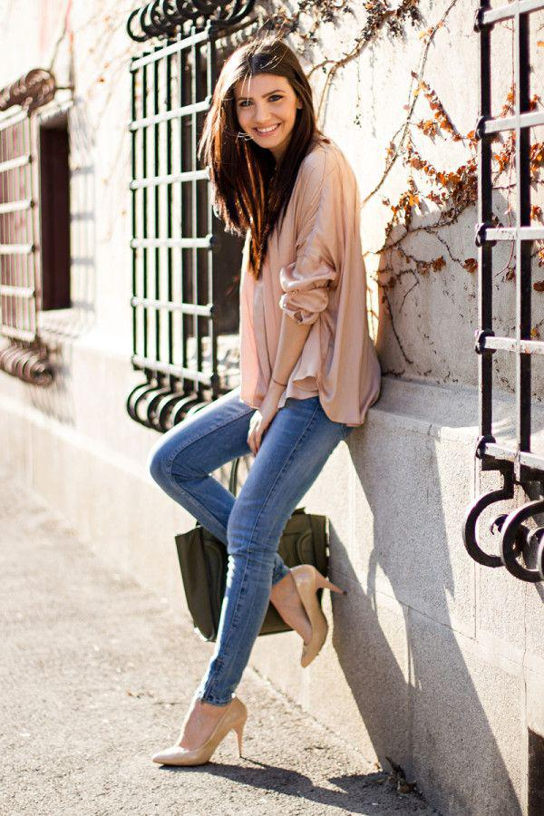
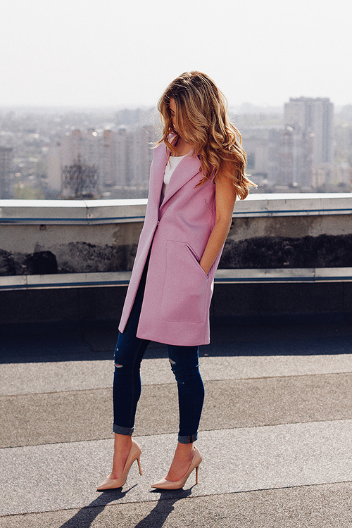

Estos tips aplican en todas las tallas, colores y estaturas ¡Animate a aplicarlos!
El usar zapatillas o botines en
punta siempre estiliza la figura
¡Siempre!

Usar Zapatos o zapatillas
color nude
¡siempre alargara tus piernas!
Usar zapatos del mismo color que tu
pantalon tambien alarga la figura
¡Visualmente más alta!
¡Fajate!
El fajarte blusas o playeras que te
queden grandes, ¡enfatiza tu figura!
Las lineas verticales siempre
alargan y estilizan
Con lineas verticales puedes disimular
partes que te causan conflicto
¡Compactan visualmente
tu cuerpo!
¿Amas el color?
Usa 3 colores máximo en tu look con
ropa básica y notaras la diferencia
Regla de 3
Usa dos colores divertidos y de
la misma gama de colores
¡Y trunfa!
2 colores, máximo 3
El punto es usar el color en prendas elegantes
y atemporales, ¡dale vida al look!
Estiliza, compacta y
¡emana poder!
look totales en un solo color de
pies a cabeza, nunca pasa de moda
Usa tus pantalones de pierna ancha
¡Al ras del zapato!
Que no se vea
Todos los looks de una misma gama de
color, se ven poderosos y
Todos te voltearan a ver
Escotes asimetricos y cuellos V
siempre adelgazan
estilizan compactan y desvían
la atención a donde debe ser
Enfatiza tu cintura
Para cinturas grandes cinto delgado
cintos anchos para mini cinturas
